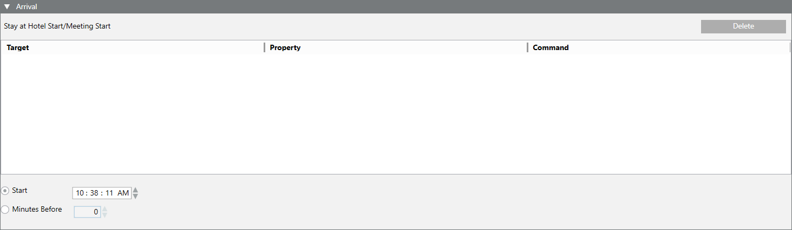
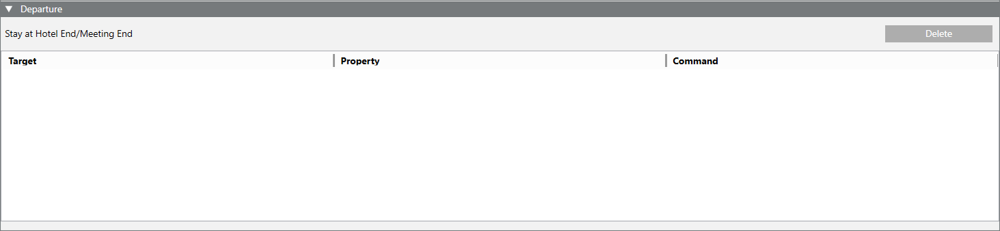

Room Automation
The Room Automation tab allows the configuring of a room’s comfort relevant to a guest’s arrival and/or departure. You can define one of the following conditions:
- Specific time of the check-in/check-out day (for example, check-in at 03:00 PM and check-out at 12:00 AM)
- Minutes before (for example, 15 minutes before check-in at 03:00 PM and check-out at 12:00 AM)
Up to five room comfort points can be configured. Specifically, you can define:
- Points to command
NOTE: If any configured target command is deleted from the configuration, the link in this tab will appear highlighted in red. - Commands and parameters to send

After configuration, a set of Headquarters scripts (HotelRoom.js, HotelRoomComfortArrival.js, and HotelRoomComfortDeparture.js) will activate the configured conditions. These scripts are included under the relevant library at L1-Headquarter’s level and under Scripts in Application View. They become available with the installation of the Room Booking extension and do not require any changes.
Authorized experts can create custom scripts for specific needs. In which case, it is recommended to set the appropriate application authorizations for the Script Editor application. For more details about scripts, see the relevant reference section.

When creating a new script starting from the Headquarters scripts, do not overwrite the existing scripts (HotelRoom.js, HotelRoomComfortArrival.js, and HotelRoomComfortDeparture.js) by clicking Save  (or pressing CTRL+F5) to save the changes for any of the current scripts. Instead, click Save As
(or pressing CTRL+F5) to save the changes for any of the current scripts. Instead, click Save As to save the changes to create a new script.
to save the changes to create a new script.
Configuring Room Points for Room Comfort
- You want to automate the room points to execute a sequence of comfort commands for the guest’s arrival and departure.
- The Room Booking extension is installed and included in the active project in the System Management Console (SMC).
- System Manager is in Engineering mode.
- System Browser is in Management View.
- Select Project > Field Networks > [SORIS Network] > [SORIS Adapter] > Hotel Room System > [room].
- The Room Automation tab is displayed. Each condition occupies one row, and is comprised of a set of fields (such as Target, Property, Command, and so forth) defining a command that will be issued when the condition is satisfied for a guest’s arrival and departure.
- To configure the room points for a guest’s arrival, inside the Stay at Hotel Start/Meeting Start expander, perform the following:
a. Drag a desired target object from System Browser into the empty area inside this expander. This will create a new row.
NOTE: The error messageInvalid Targetis displayed if you try to save the configuration without configuring first the Property and Command fields.
b. Configure the other fields in the row to set what Property of the Target objects will be affected and the Command to send.
c. Specify one of the following comfort start options:
- Select Start and specify the time when the comfort option will start in the room.
- Select Minutes Before and specify the time before which the comfort will start.
NOTE: This setting is not supported in the FIAS Adapter for PMS Systems extension.
d. Repeat the substeps above to configure up to five room points. 
- To configure the room points for the guest’s departure, inside the Stay at Hotel End/Meeting End expander, do the following:
a. Drag a desired target object from System Browser o the empty area inside this expander. This will create a new row.
NOTE: The error messageInvalid Targetis displayed if you try to save the configuration without configuring first the Property and Command fields.
b. Configure the other fields in the row to set what Property of the Target objects will be affected, and the Command to send.
c. Repeat the substeps above to configure up to five room points. 
- (Optional) To adjust the room points configuration, you can make adjustments as follows:
- To alter the configuration of an existing room point, click its row and modify its fields (such as Target, Property, Command, and so forth) as required.
- To delete the configuration of a room point, select its row and click Delete.
- Click Save .